1. Follow one real recording through the DSP front end
The bundled Speech Commands recording yes/004ae714_nohash_0.wav is processed by modular MATLAB functions with detailed English comments. Each stage produces an effect plot and numerical arrays. The label “yes” comes from the dataset; no model prediction is implied.

| Stage | Frozen reference |
|---|---|
| Input | 16 kHz, mono, exactly 16,000 samples |
| Framing / window | 480 samples / 320 hop; symmetric Hamming; 49 frames |
| Spectrum | 512-point FFT; 257 bins; |FFT|² / 512 |
| Mel / logarithm | 40 filters, 20–8,000 Hz; ln(max(E, 10⁻¹⁰)) |
| DCT / interface | Orthonormal DCT-II c0–c9; [N, 1, 49, 10] |
The frame count is 1 + floor((16000 − 480) / 320) = 49; the final 160 samples are outside the last complete frame. The baseline adds no implicit pre-emphasis, normalization, resampling or padding.
Inspect all ten module-effect figures
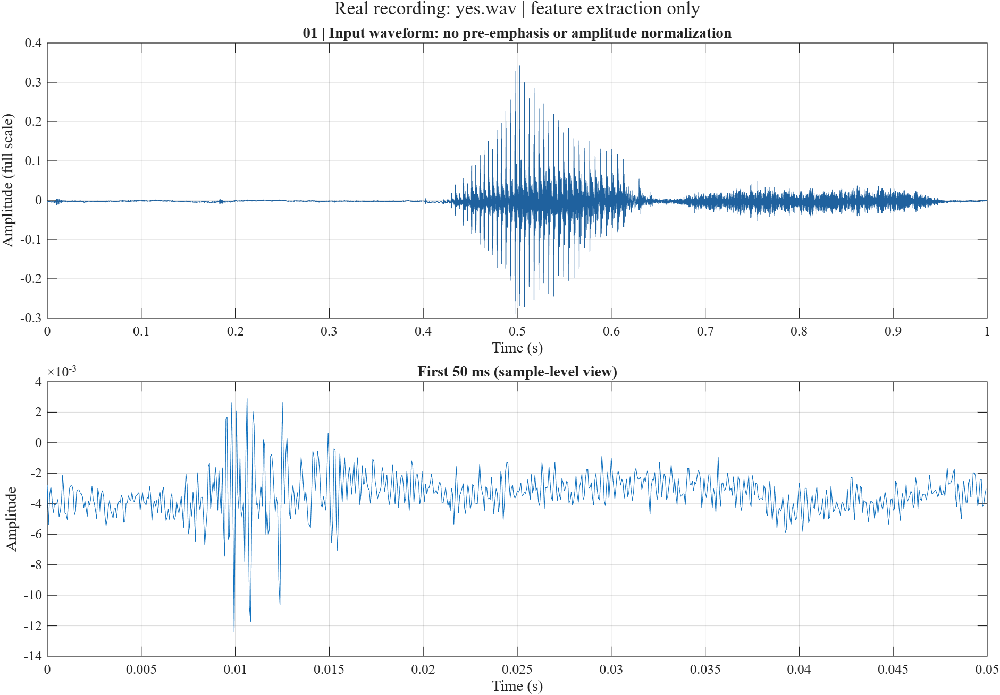
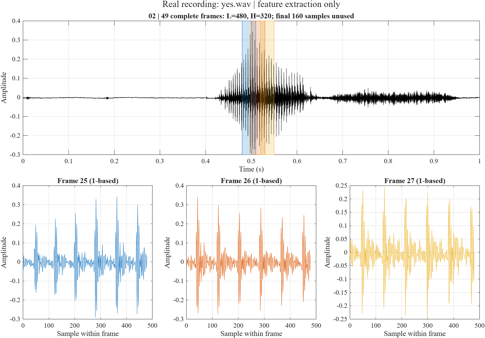
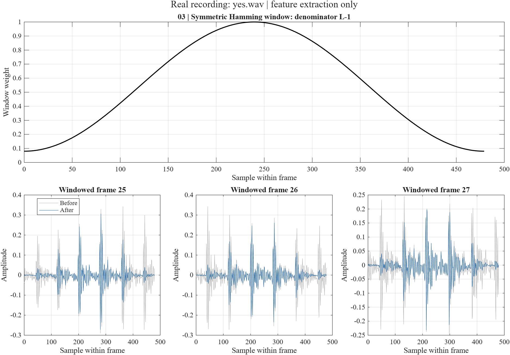
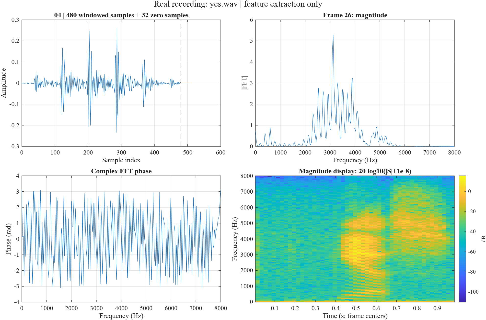
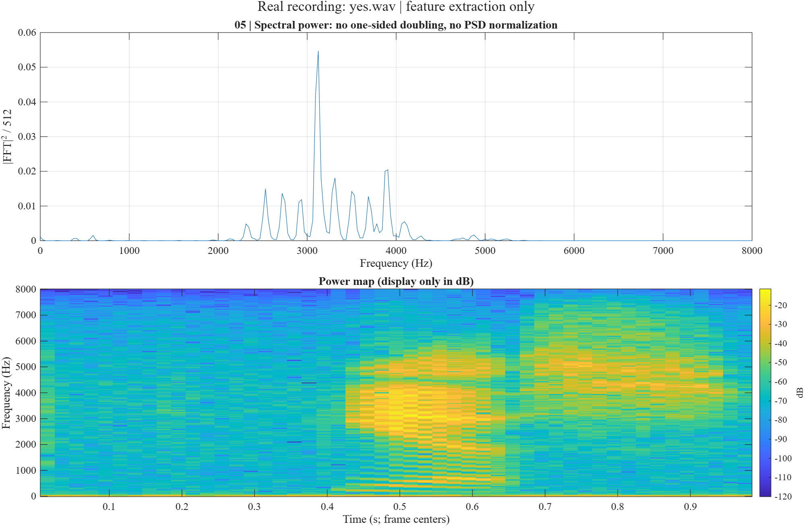
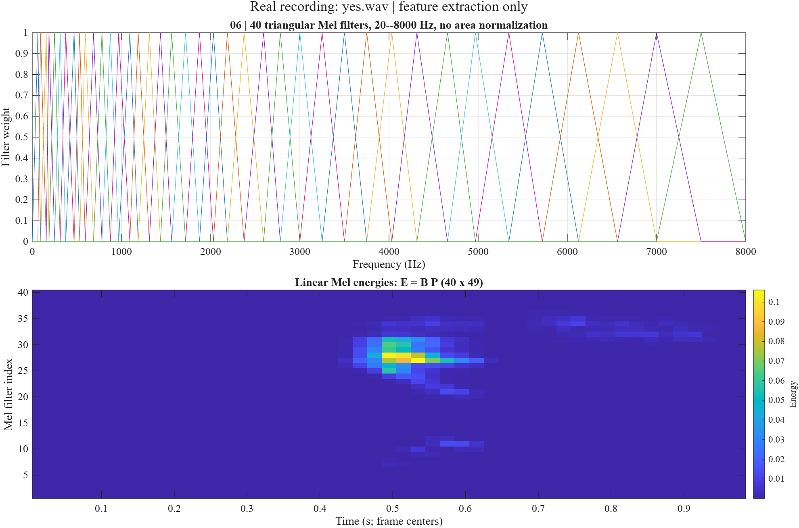
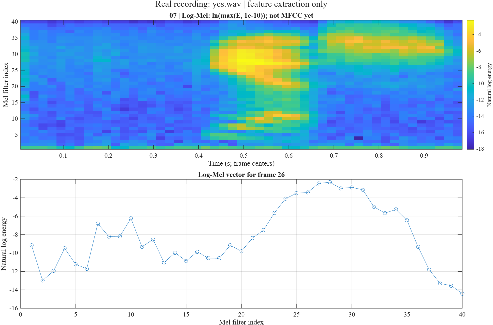
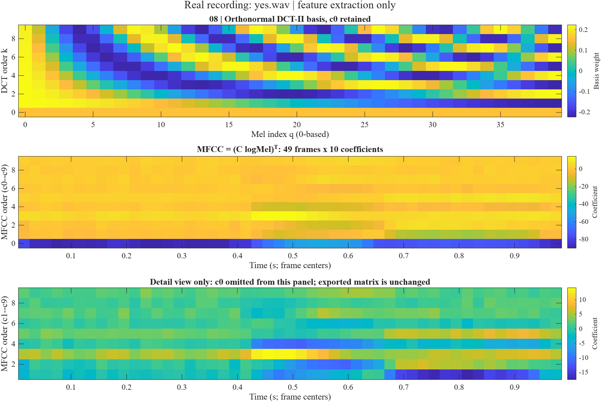
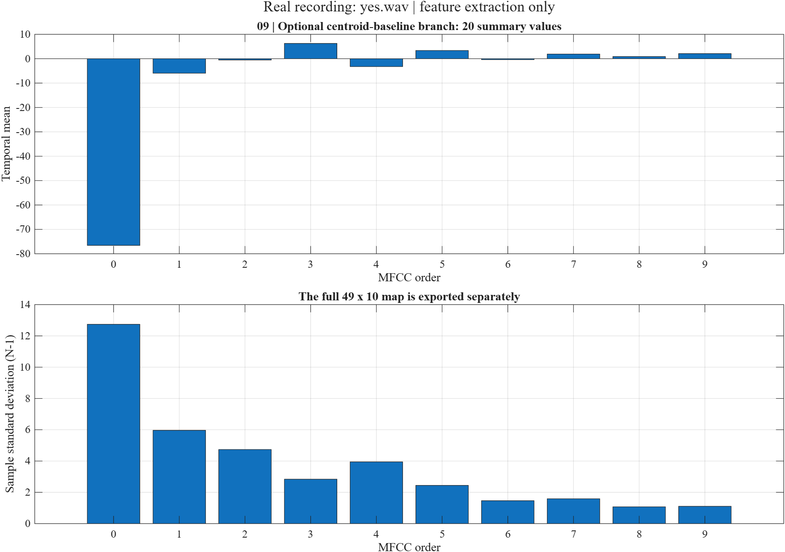
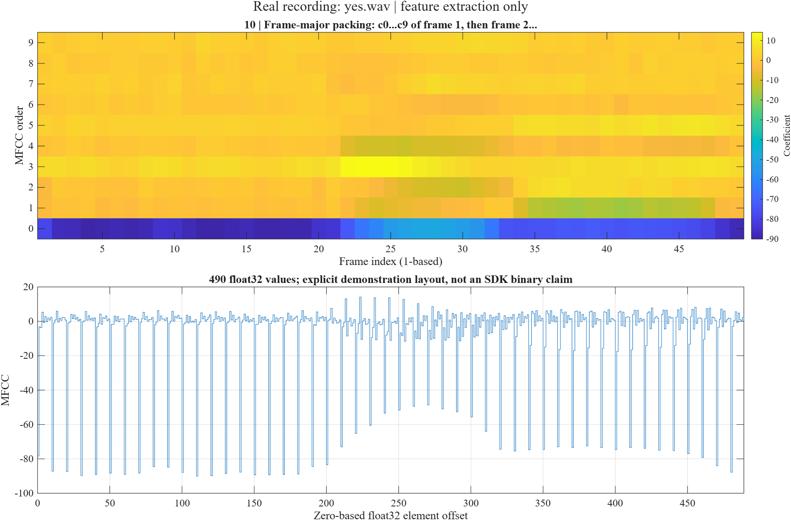
2. Make the downstream model explicit

A 64-channel 10×4 convolution with stride 2 precedes four independent DW3×3 + PW1×1 blocks. Dropout is active during training. Adaptive average pooling, flattening and a linear layer produce 12 logits. The model contains no residual branch or concatenation.
View the depthwise-separable block
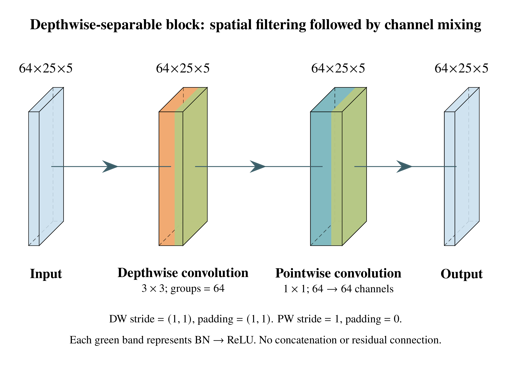
Change model.json for channels, block count, input dimensions or kernel geometry, and style.json for layout. The retained Python generator propagates shapes and compiles actual PlotNeuralNet/TikZ primitives into PDF, SVG and PNG. Open source and rebuild instructions.
3. Optimize the complete signal-to-decision path
A front end changes the information available to the model and its computational workload. Increasing time resolution or Mel-band count may improve recognition while enlarging activation memory; a better representation may permit a narrower model. Evaluate these as paired experiments.
Cache the window, filterbank and DCT; reduce allocations. Verify numerical agreement and measure setup separately from steady-state cost.
Control conditioning, normalization and compression at a fixed input shape. Retrain the same backbone with matched budgets.
Pair time/frequency dimensions with model width, depth and quantization. Compare accuracy, robustness and total resource cost.
Use frozen partitions, training-only calibration, validation-based selection and at least three matched seeds. Keep the final test set for final evaluation. Utterance normalization and streaming normalization have different causality and delay; record that distinction.
Measure DSP, packing/quantization, inference and post-processing costs. Analytical MAC counts do not substitute for measured latency or energy. Device energy comparisons require explicit acquisition, idle-baseline and MCU-versus-board boundaries.
Evidence and reproducibility
Verified: the MATLAB refactor agrees exactly with the frozen original across 53 front-end probes and 11 workflow variables. The real example exports a 49×10 MFCC map and round-trips 490 float32 values. Open work: TI SDK numerical parity, trained DSCNN evaluation, quantized inference, compiler acceptance and hardware timing/energy.
The earlier 5-NN MFCC ablation remains a separate diagnostic. Its accuracy must not be presented as a DSCNN result. Source licenses, the waveform attribution and release hashes are retained with the workbench.
Architecture sources: pinned TI model implementation and pinned PlotNeuralNet.